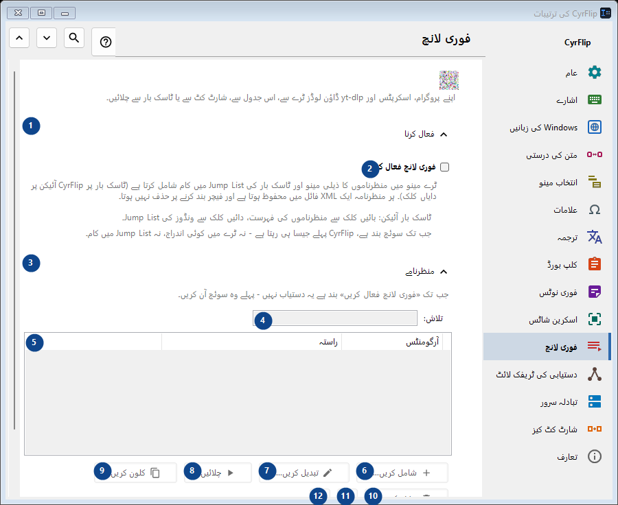
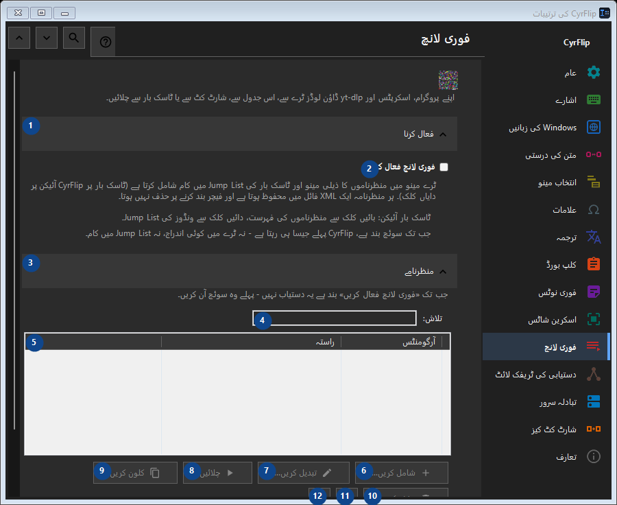

فوری لانچ
مقصد
اپنے پروگرام، اسکرپٹس اور yt-dlp ڈاؤن لوڈز ٹرے سے، اس جدول سے، شارٹ کٹ سے یا ٹاسک بار سے چلائیں۔


استعمال کی ترتیب
ترتیبات فوراً لاگو ہوتی ہیں۔ کوئی لازمی ترتیب نہیں؛ نیچے کے گروپ استعمال کریں۔
عناصر
1. فعال کرنا
درج شدہ کارروائی کے لیے یہ حکم استعمال کریں۔ قبول کرنے سے پہلے تصدیق پڑھیں۔
آپ کے شارٹ کٹ2. فوری لانچ فعال کریں
ٹرے مینو میں منظرناموں کا ذیلی مینو اور ٹاسک بار کی Jump List میں کام شامل کرتا ہے (ٹاسک بار پر CyrFlip آئیکن پر دایاں کلک)۔ ہر منظرنامہ ایک XML فائل میں محفوظ ہوتا ہے اور فیچر بند کرنے پر حذف نہیں ہوتا۔
آپ کے شارٹ کٹ3. منظرنامے
درج شدہ کارروائی کے لیے یہ حکم استعمال کریں۔ قبول کرنے سے پہلے تصدیق پڑھیں۔
آپ کے شارٹ کٹ4. تلاش
جب تک «فوری لانچ فعال کریں» بند ہے یہ دستیاب نہیں - پہلے وہ سوئچ آن کریں۔ یہ عنصر ابھی دستیاب نہیں۔ پہلے خصوصیت فعال کریں یا اندراج منتخب کریں۔
آپ کے شارٹ کٹ5. فوری لانچ
جب تک «فوری لانچ فعال کریں» بند ہے یہ دستیاب نہیں - پہلے وہ سوئچ آن کریں۔ یہ عنصر ابھی دستیاب نہیں۔ پہلے خصوصیت فعال کریں یا اندراج منتخب کریں۔ نام / راستہ / آرگومنٹس / ورکنگ فولڈر / ایڈمن / شارٹ کٹ
آپ کے شارٹ کٹ6. شامل کریں...
جب تک «فوری لانچ فعال کریں» بند ہے یہ دستیاب نہیں - پہلے وہ سوئچ آن کریں۔ یہ عنصر ابھی دستیاب نہیں۔ پہلے خصوصیت فعال کریں یا اندراج منتخب کریں۔
آپ کے شارٹ کٹ7. تبدیل کریں...
جب تک «فوری لانچ فعال کریں» بند ہے یہ دستیاب نہیں - پہلے وہ سوئچ آن کریں۔ یہ عنصر ابھی دستیاب نہیں۔ پہلے خصوصیت فعال کریں یا اندراج منتخب کریں۔
آپ کے شارٹ کٹ8. چلائیں
جب تک «فوری لانچ فعال کریں» بند ہے یہ دستیاب نہیں - پہلے وہ سوئچ آن کریں۔ یہ عنصر ابھی دستیاب نہیں۔ پہلے خصوصیت فعال کریں یا اندراج منتخب کریں۔
آپ کے شارٹ کٹ9. کلون کریں
جب تک «فوری لانچ فعال کریں» بند ہے یہ دستیاب نہیں - پہلے وہ سوئچ آن کریں۔ یہ عنصر ابھی دستیاب نہیں۔ پہلے خصوصیت فعال کریں یا اندراج منتخب کریں۔
آپ کے شارٹ کٹ10. حذف کریں
جب تک «فوری لانچ فعال کریں» بند ہے یہ دستیاب نہیں - پہلے وہ سوئچ آن کریں۔ یہ عنصر ابھی دستیاب نہیں۔ پہلے خصوصیت فعال کریں یا اندراج منتخب کریں۔
آپ کے شارٹ کٹ11. اوپر منتقل کریں
جب تک «فوری لانچ فعال کریں» بند ہے یہ دستیاب نہیں - پہلے وہ سوئچ آن کریں۔ یہ عنصر ابھی دستیاب نہیں۔ پہلے خصوصیت فعال کریں یا اندراج منتخب کریں۔
آپ کے شارٹ کٹ12. نیچے منتقل کریں
جب تک «فوری لانچ فعال کریں» بند ہے یہ دستیاب نہیں - پہلے وہ سوئچ آن کریں۔ یہ عنصر ابھی دستیاب نہیں۔ پہلے خصوصیت فعال کریں یا اندراج منتخب کریں۔
آپ کے شارٹ کٹ13. ایکسپورٹ...
جب تک «فوری لانچ فعال کریں» بند ہے یہ دستیاب نہیں - پہلے وہ سوئچ آن کریں۔ یہ عنصر ابھی دستیاب نہیں۔ پہلے خصوصیت فعال کریں یا اندراج منتخب کریں۔
آپ کے شارٹ کٹ14. امپورٹ...
جب تک «فوری لانچ فعال کریں» بند ہے یہ دستیاب نہیں - پہلے وہ سوئچ آن کریں۔ یہ عنصر ابھی دستیاب نہیں۔ پہلے خصوصیت فعال کریں یا اندراج منتخب کریں۔
آپ کے شارٹ کٹ15. OneClickRunner سے امپورٹ...
جب تک «فوری لانچ فعال کریں» بند ہے یہ دستیاب نہیں - پہلے وہ سوئچ آن کریں۔ یہ عنصر ابھی دستیاب نہیں۔ پہلے خصوصیت فعال کریں یا اندراج منتخب کریں۔
آپ کے شارٹ کٹ